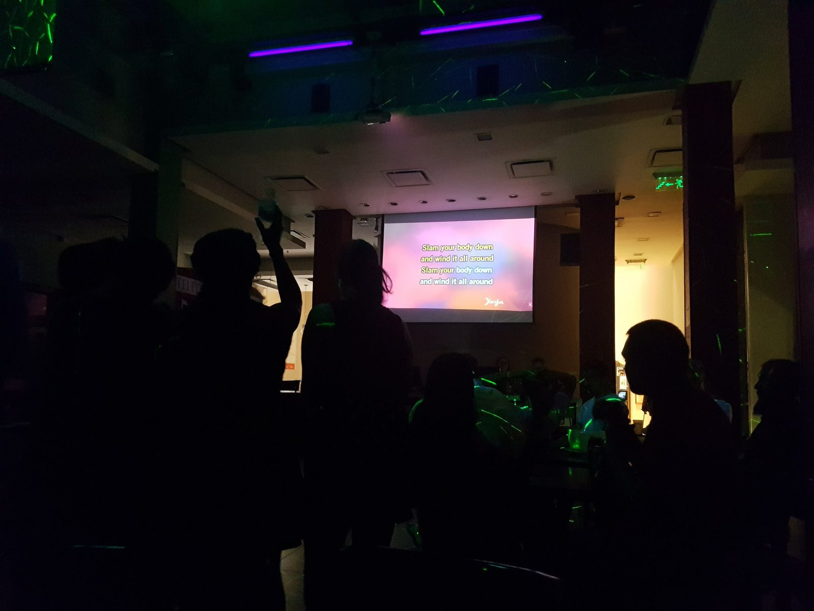
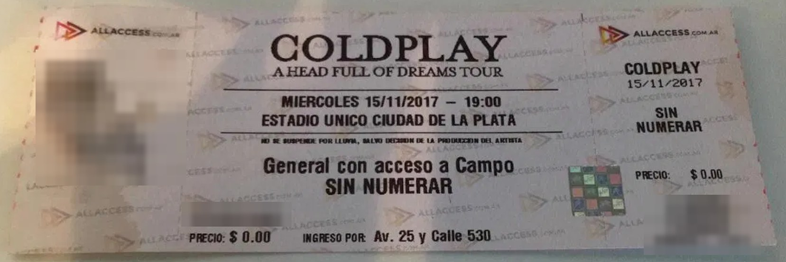
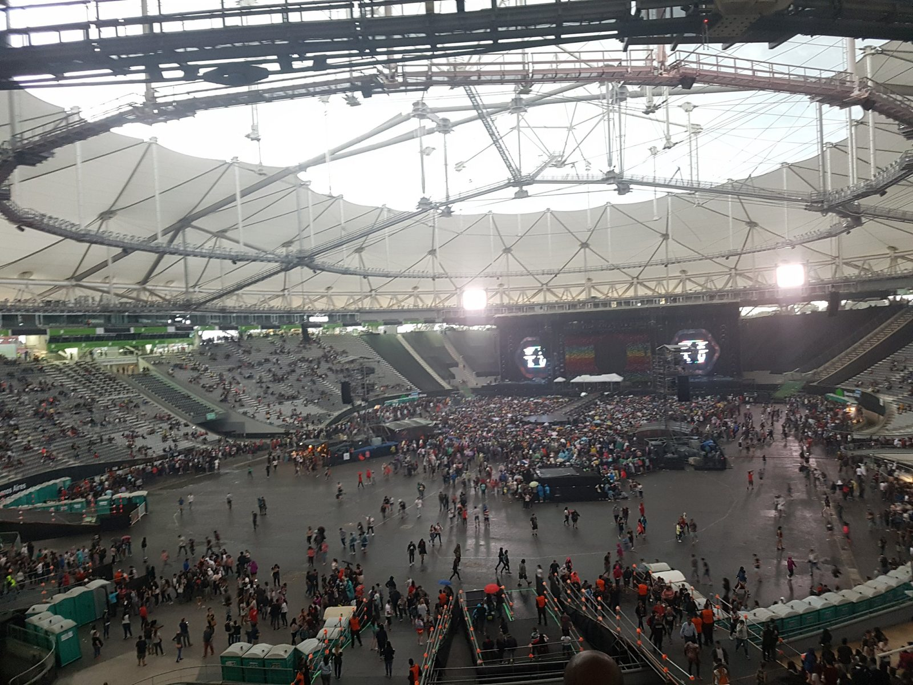
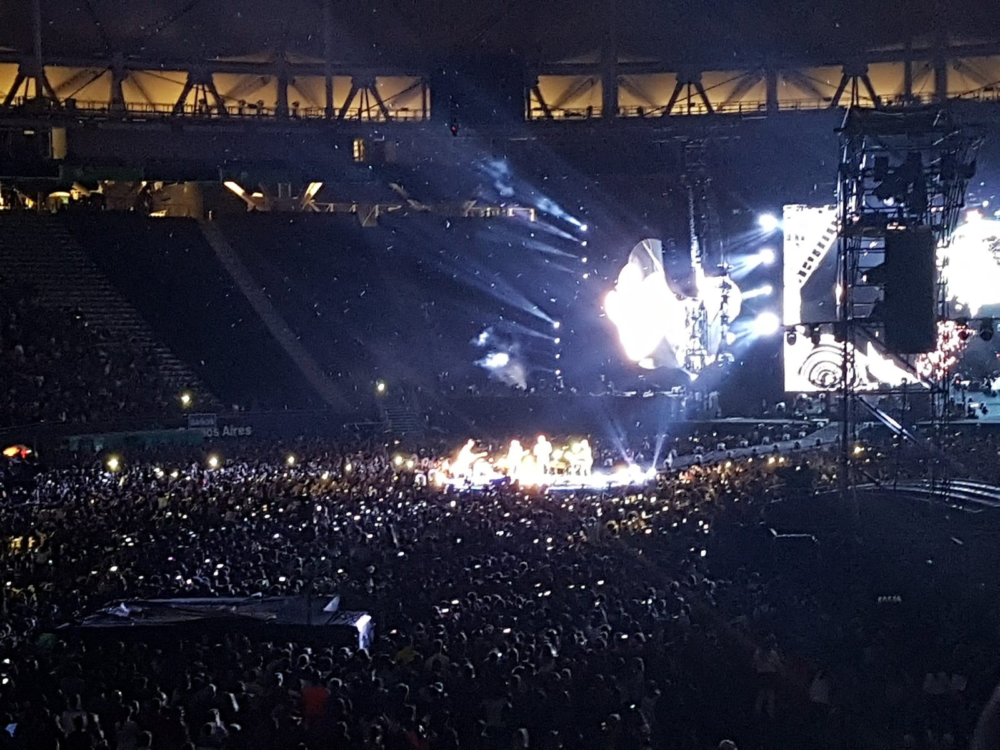
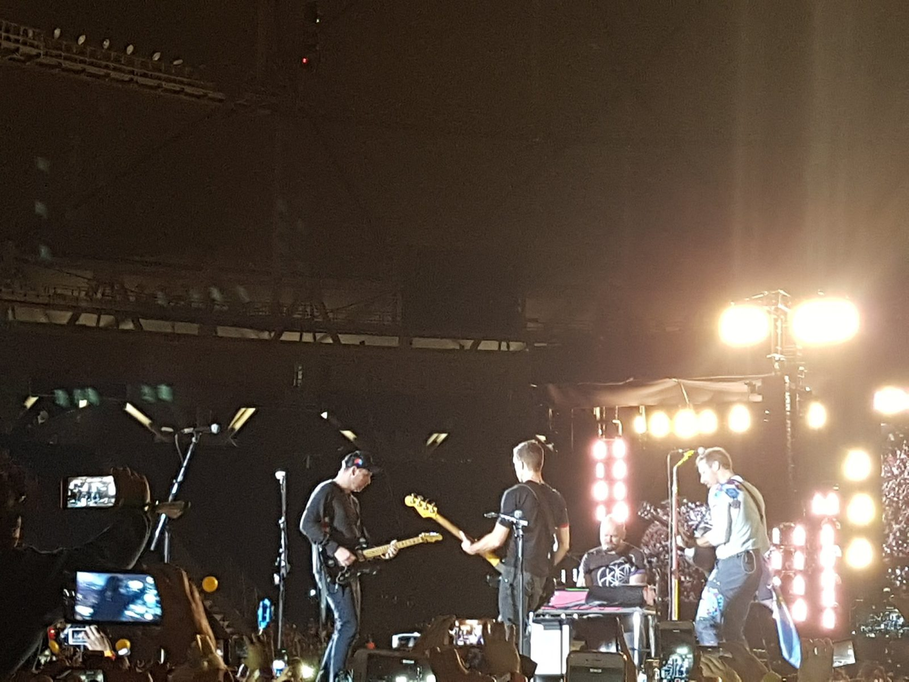
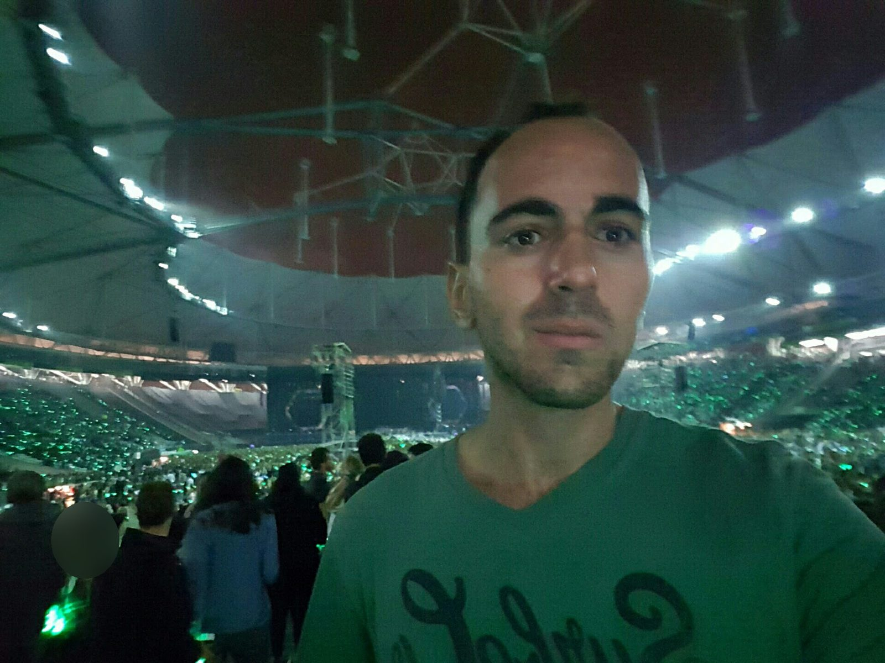

South America · Argentina · Buenos Aires
Buenos Aires, November 2017
I came to Buenos Aires by train from Rosario and stayed in a Milhouse hostel for my whole time in the city. I left for Colombia right after the Coldplay concert. In between there was a karaoke night in another Milhouse hostel and one long day that went to the concert in La Plata.
My conclusion up front: I saw very little of Buenos Aires itself. What I have is a hostel, a karaoke night and a stadium in another city. If you want a guide to the capital, this is not it. If you want to know what a few days around a big concert looked like, read on.
The times are my phone's clock, and Google Photos stores them in Argentine time (GMT-3). The boxes hold research I did in November 2026, each with a source and a date, so you can tell it apart from what I remember.
The hostel
I slept at a Milhouse hostel the whole time. I do not remember which branch. Google Maps lists two in the city centre: Milhouse Hostel Hipo, at Hipólito Yrigoyen 959, and Milhouse Hostel Avenue, at Avenida de Mayo 1245. I remember only that the hostels of this chain were close to each other. I did not take a photo of my room or of the lobby, and I have no photo from my first day, so I do not know if I arrived on Monday, November 13, or on Tuesday, November 14.
What I found: both branches appear on Google Maps as open, 24 hours, with a rating of 4.3. The reviews are mixed and are other people's opinions, not mine: those for Avenue talk about nightly events and a pub crawl, and some of those for Hipo say it is quiet and not a social hostel. I could not tell which of the two I stayed in, and the hostel may have changed in nine years.
What I did not find: the 2017 rates, and whether the branches had the same names then. Check the branch you book before you rely on a review.
The karaoke night
One of the nights the hostel took a group of us to a karaoke party in another Milhouse hostel, not far from ours. My photo is from 00:06 on Wednesday, November 15, so the evening itself was Tuesday the 14th. It shows a dark room with green laser lights, a projector screen with lyrics, and people standing with their backs to me. I filmed three short clips between 00:05 and 00:18. I am not showing the clips, because the people in them are close to the camera, and I am not quoting the song.
Google Photos pins the clips in Buenos Aires, in the Monserrat neighbourhood, close to Avenida de Mayo and the Palacio Barolo. That is a reading of an approximate pin, and I cannot name the hostel from it. I do not remember who organised the evening or what we paid.

The concert in La Plata
On Tuesday, November 14, at 18:19, I took a screenshot of my ticket for Coldplay. It says Wednesday, November 15, 19:00, Estadio Único Ciudad de La Plata, general admission with access to the field, no numbered seat, and the date of issue is July 13, 2017. The barcode and the ticket numbers are blurred in the photo below.
I bought the ticket through a website, and I paid about three times what local fans paid. I understood that only later. I do not remember which site it was or the exact amounts, so I am not naming it. If you are not from Argentina, check how locals buy tickets before you pay a reseller.

I went to La Plata by taxi, and it took a very long time. That is when I understood that I was travelling very long distances inside what I thought of as one city: La Plata is a different city, outside the capital. I do not remember the price or how long the ride took, and I do not remember how I came back.
At 18:13 I photographed the stadium before the show. The floor was wet, the people were in rain gear, and there was a stage at the far end under the translucent roof.

The show is on my phone as 25 short videos and a few photos, from 18:15 until 23:36. I am not including the videos, because most are dark and shaky and the people in them are close to the camera. The photos show where I was: far from the stage, with a view of the band on a small stage in the middle of the crowd. The wide shot is from 22:08 and the close one from 23:07. The selfie is from 23:37, close to the end, with the green wristbands the audience wore lighting the stands behind me. I blurred the face of a person in it.



What I found: the band played two nights in La Plata, on November 14 and November 15, 2017 (Concert Archives). The second night was added after the first sold out within days of going on sale, according to an article from July 12, 2017 (Diario Jornada). I was at the second night, as my ticket says.
The stadium today: it is now called Estadio Único Diego Armando Maradona. An article from September 16, 2026 says it is in the final stage of a full renovation, and that a friendly of the Argentine women's team against Germany will reopen it, inside the international window of November 23 to December 6, 2026, with the exact date not yet confirmed (El Economista).
Getting there today: for concerts in October 2026 the Roca train added night services between Constitución and La Plata, on the three show days only: from Constitución at 21:51 and 23:00 on weekdays, and back from La Plata at 23:00, 00:00 and 00:30. Passengers needed a SUBE card registered in their name with credit (Perfil, October 22, 2026).
What I did not find: how fans got to La Plata in 2017 and what the taxi should have cost. Check the transport plan for the specific show before you go.
The flight to Colombia
After the concert I flew from Buenos Aires to Colombia. I have no photos from Thursday, November 16, and my first photo in Colombia is from Friday, November 17, in Bogotá, in the La Candelaria area, so I flew either on the 16th or early on the 17th. I do not remember the airline, the airport or the price. I did not research the flights.
What I think now
If you plan a big concert, book the transport at least as carefully as the ticket: a standing ticket in a stadium in another city means a long evening, and a night return. I would also decide at the start which Milhouse branch you want, because they differ.
What I do not remember
I do not remember which Milhouse branch I slept in, what I paid, which day I arrived and what I did before the 14th, who took us to the karaoke night, how I came back from La Plata, what I ate, which airline I flew, and what I did on November 16. I would rather leave these empty than make them up.